C++ 不知树系列之认识二叉树（数组、链表存储的实现）
1. 概念
顾名思义，二叉树指树中的任何一个结点的子结点不能多于 2 个。二叉树又分为：
- 一般二叉树。只要符合结点的
子结点个数不多于2个就可以。
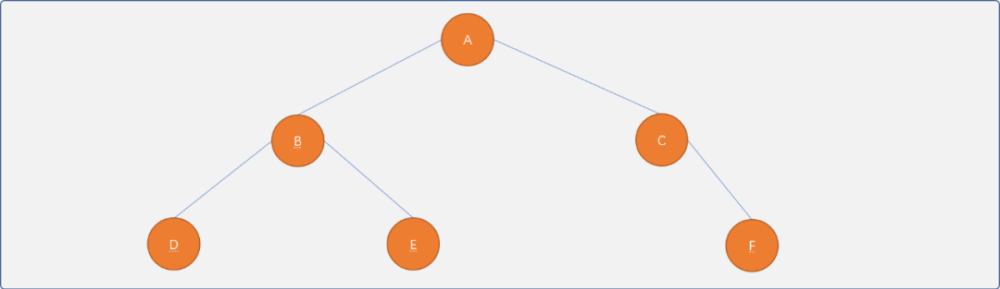
- 满二叉树。
满的意思指除了叶结点，其它结点的子结点都达到了2个。
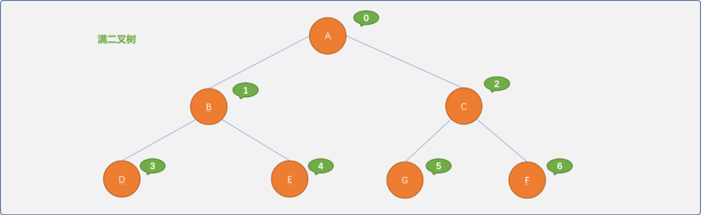
- 完全二叉树。满二叉树其实也是完全二叉树。完全二叉树可以通俗理解：如果对满二叉树的结点从上向下，从左向右进行有序编号，当删除某个结点后，其编号应该还是相邻有序。
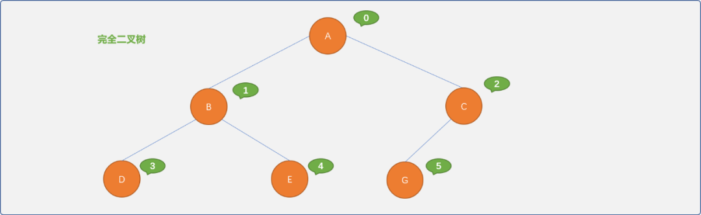
二叉树的特性：
二叉树是使用频率非常高的一种树结构。
为什么认为二分是最好的，三分、四分……难道就不行吗？
因为二分思想与计算机的二进制存储相吻合，2 的倍数可以给二叉树带来诸多独特的特性。
- 二叉树的第
i层上最多有2i-1 个结点（i>=1）。
可以把二叉树看成一个由低位向高位变化的二进制数据。如下图所示的满二叉树时，可以对应一个 3 位的二进制数据。
如第三层（最高位）最大值为23-1=4；第二层（中间位）最大值为22-1=2；第一层（最低位）最大值为21-1=1。
更科学的是使用归纳法证明这个命题：
当 i=0时，显然，二叉树只有一个根结点，命题是成立的。
假设对于第j层，最多结点个数有 2j-1是成立，对于 i=j+1层而言，因每一个结点最多只有 2 个子结点，所以，第 i层最多的也只可能有 2*2j-1个结点，也就是 2*2i-2=2i-1。
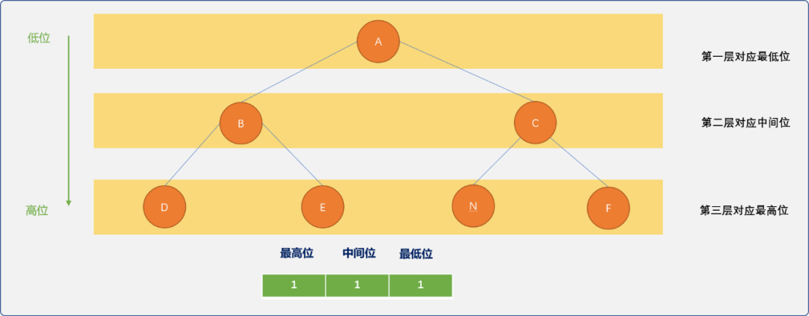
-
深度为
k的二叉树最多有 2k-1个结点。其实二叉树每一层上的结点个数是一个等比数列：20+21+22+……+2k-1，根据等比数列的求和公式可知：sk=2k-1。 -
具有
n个结点的完全二叉树的深度为[log2n]+1。 -
对于一个结点数为
n且对结点进行编号的完全二叉树而言，编号为i的 结点和子结点之间满足如下关系：
i=1时，则为根结点，没有双亲，也可以认为父结点编号为 0；否则，其双亲结点的编号为[i/2]。
2i>n时，则结点i没有左孩子；否则，其左孩子结点的编号为2i。
2i+1>n时，则结点i没有右孩子；否则，其右孩子结点的编号为2i+1。
2. 物理存储
二叉树可以采用顺序表或链表两种存储结构。
2.1 顺序存储
当二叉树是非线性结构时，理论上很难用顺序存储描述出数据之间的逻辑关系。但是，于完全二叉树而言，因父子结点之间满足特定的数学关系，使用顺序表存储非常容易实现。
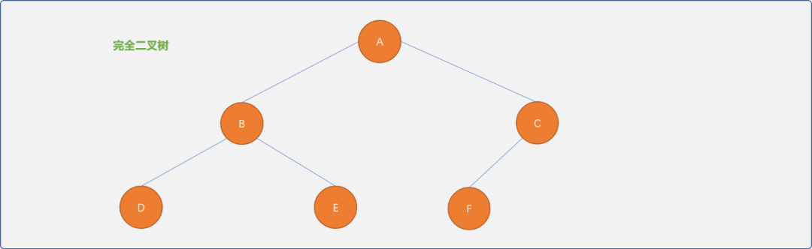
2.1.1 实现思路
- 创建一个一维数组，把根结点存储在数组中下标为
1的位置。下标为0的位置存储数字0，表示根结点没有父结点。
- 如果根结点有左右子结点，根据完全二叉树中父子结点之间的数学规律：左子结点存储存在
2*i位置，右子结点存储在2*i+1位置。
- 采用树的递归定义思想。把已经存储的结点作为根结点，检查是否存在子结点，然后按照父子结点之间的数学关系继续进行存储，直到存储完所有结点。
顺序存储的优点：
- 数据存储在一维数组中，数组间的索引号描述了数据与数据之间的关系。
- 数据信息以及数据之间的逻辑关系一步到位。极度舒适的不要不要的！
2.1.1 具体实现
完全二叉树的顺序表存储的具体实现流程。
- 定义结点类型：用来描述结点本身的信息。
#include <iostream>
#define MAX 10
using namespace std;
template<typename T>
struct BTNode {
//编号,唯一标识符
int code;
//数据
T data;
BTNode() {}
BTNode(int code,T val) {
this->code=code;
this->data=val;
}
//自我显示
void desc() {
cout<<"结点："<<this->code<<"_"<<this->data<<endl;
}
};
- 定义树类型：此类中提供对树的常规操作方法。
template<typename T>
class BinaryTree {
private:
//使用一维数组作为树结点存储容器
BTNode<T> elem[MAX];
//二叉树结点的编号由内部指定,根结点编号从 1 开始，这里的编号仅是结点的标识符
int idx=1;
//树中结点的数量
int size=0;
public:
//无参构造函数
BinaryTree() {
}
//有参构造函数，初始化根结点
BinaryTree(T val,T init) {
//初始化数组
for(int i=0; i<MAX; i++) {
//默认值为{0,init}
this->elem[i]= {0,init};
}
//创建根结点
BTNode<T> root(this->idx++,val);
//根结点添加在下标为 1 的位置
this->elem[1]=root;
this->size++;
}
//得到根结点
BTNode<T> getRoot() {
return this->elem[1];
}
//查询结点在数组中的存储位置
int findIndex(BTNode<T> node) {
for(int i=1; i<=this->size; i++) {
if(this->elem[i].data==node.data)
return i;
}
return -1;
}
//根据值查询结点
BTNode<T> findIndex(T val) {
for(int i=1; i<=this->size; i++) {
if(this->elem[i].data==val)
return this->elem[i];
}
return {0,'\0'};
}
//添加新结点
BTNode<T> addNewNode(BTNode<T> parent,T val) {
//得到父结点的存储位置
int pos= this->findIndex(parent);
if(pos==-1)
return NULL;
//创建新结点
BTNode<T> newNode(this->idx++,val);
if (this->elem[pos*2].code==0) {
//说明左子结点位置为空
this->elem[pos*2]=newNode;
this->size++;
return newNode;
} else if(this->elem[pos*2+1].code==0) {
//说明右子结点位置为空
this->elem[pos*2+1]=newNode;
this->size++;
return newNode;
} else {
//说明左右子结点都已经存在，不能插入
BTNode<T> tmp= {0,'\0'};
return tmp;
}
}
//得到结点的左子结点
BTNode<T> getLeftNode(BTNode<T> parent) {
//结点的存储位置
int pos= this->findIndex(parent);
if(2*pos>this->size){
return {0,'\0'};
}else{
//说明存在左子结点
return this->elem[pos*2];
}
}
//得到结点的右子结点
BTNode<T> getRightNode(BTNode<T> parent) {
//结点的存储位置
int pos= this->findIndex(parent);
if ((2*pos+1)>this->size) {
return {0,'\0'};
} else {
//说明存在右子结点
return this->elem[pos*2+1];
}
}
//删除结点
int delNode(){}
//遍历所有结点
void showAll() {
for(int i=1; i<=size; i++) {
this->elem[i].desc();
if( i*2<=size ) {
cout<<"\t左";
this->elem[i*2].desc();
}
if( i*2+1<=size) {
cout<<"\t右";
this->elem[i*2+1].desc();
}
}
}
};
测试：
int main(int argc, char** argv) {
//创建树
BinaryTree<char> tree('A','\0');
//返回根结点
BTNode<char> root= tree.getRoot();
//为根结点添加子结点
BTNode<char> bNode= tree.addNewNode(root,'B');
BTNode<char> cNode= tree.addNewNode(root,'C');
//为 B结点添加子结点
BTNode<char> dNode= tree.addNewNode(bNode,'D');
BTNode<char> eNode= tree.addNewNode(bNode,'E');
//为 C结点添加子结点
BTNode<char> fNode= tree.addNewNode(cNode,'F');
//遍历所有结点
tree.showAll();
cout<<"B 结点的左子结点：";
tree.getLeftNode(bNode).desc();
cout<<"B 结点的右子结点：" ;
tree.getRightNode(bNode).desc();
return 0;
}
输出结果：
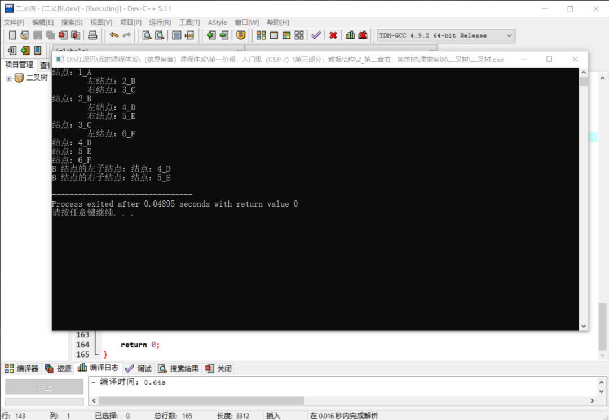
单独讨论一下完全二叉树的删除方法。
删除要分几种情况：
- 如果删除的是最后一个叶结点，因不涉及到牵一发动全身的问题，直接删除便是。
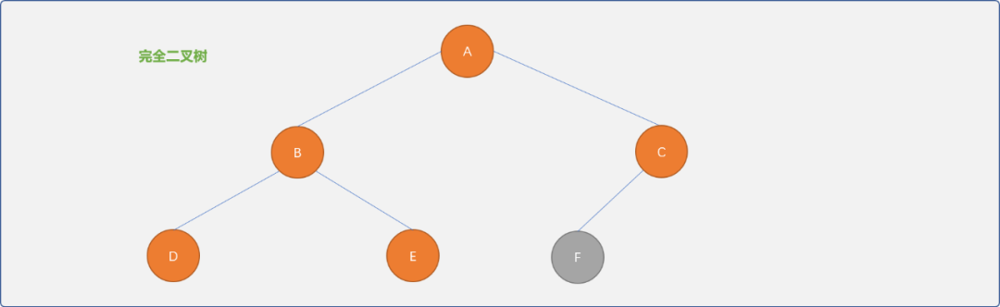
- 如果删除的不是最后一个叶结点，为了保持完全二叉树特性，可以采用复制最后一个叶结点的方式。如下删除
B结点。
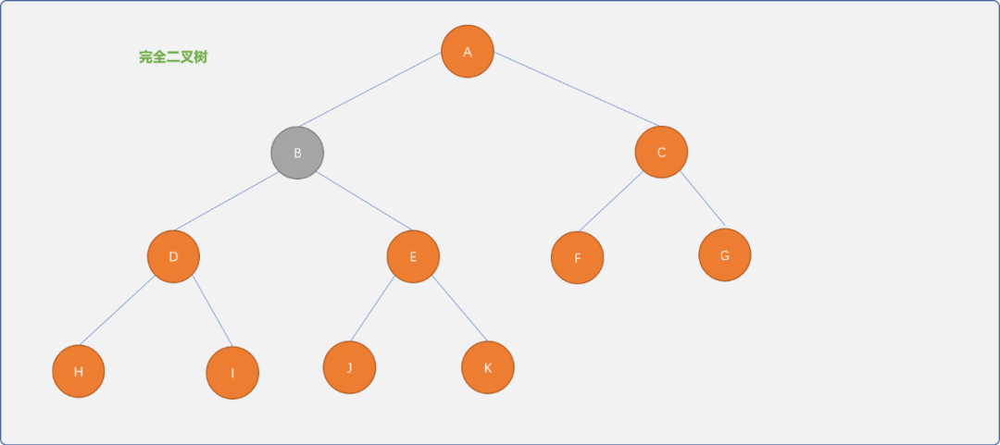
可以把最后的叶结点K复制过来。当然，前提是不在意谁一定是谁的前驱，谁一定是谁的后驱，如在描述家族关系的二叉树中，就不能这么做，否则，孙子会一转身成为祖辈。
本文着重讨论存储，删除时需要考虑的更复杂问题留到新文中再讲解。
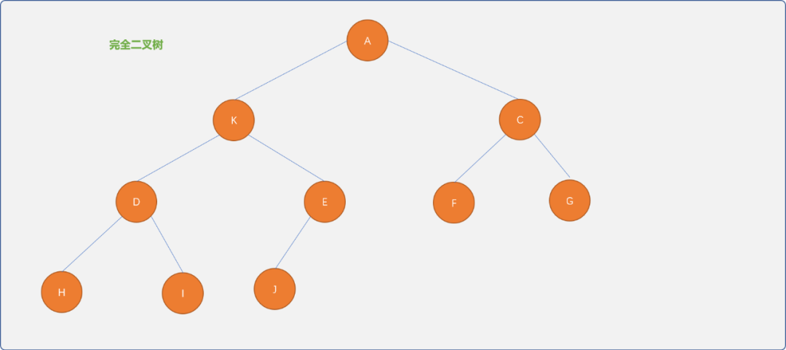
删除函数的实现：
//删除结点
int delNode(BTNode<T> node){
//查找结点位置
int pos= this->findIndex(node);
if (pos*2>this->size ){
//最后一个子结点，直接删除
this->elem[pos]={0,'\0'};
this->size--;
return true;
}else{
//把最后一个结点复制到要删除的结点位置
this->elem[pos]=this->elem[this->size];
this->size--;
return true;
}
return false;
}
测试删除：
int main(int argc, char** argv) {
//创建树
BinaryTree<char> tree('A','\0');
//返回根结点
BTNode<char> root= tree.getRoot();
//为根结点添加子结点
BTNode<char> bNode= tree.addNewNode(root,'B');
BTNode<char> cNode= tree.addNewNode(root,'C');
//为 B结点添加子结点
BTNode<char> dNode= tree.addNewNode(bNode,'D');
BTNode<char> eNode= tree.addNewNode(bNode,'E');
//为 C结点添加子结点
BTNode<char> fNode= tree.addNewNode(cNode,'F');
cout<<"原完全二叉树："<<endl;
tree.showAll();
cout<<"删除最后一个结点："<<endl;
tree.delNode(fNode);
tree.showAll();
//删除 B 结点
cout<<"删除B结点："<<endl;
tree.delNode(bNode);
tree.showAll();
return 0;
}
输出结果：
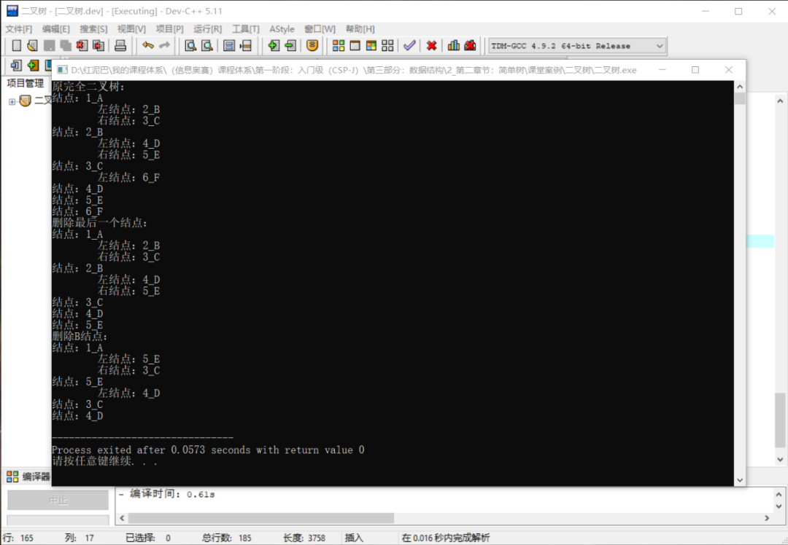
2.2 链式存储
使用顺序存储完全二叉树是可行，若不是完全二叉树，为了保留父子之间关系的数学特性，则需要在数组中使用留空方式为没有子结点的结点虚拟出空子结点（甚至为虚拟结点再虚拟子结点）。
把一棵非完全二叉树想象成一棵完全二叉树。
如下图所示，留空的下标为 4的位置就是为B结点虚拟的左子结点……如此会造成空间的严重浪费。
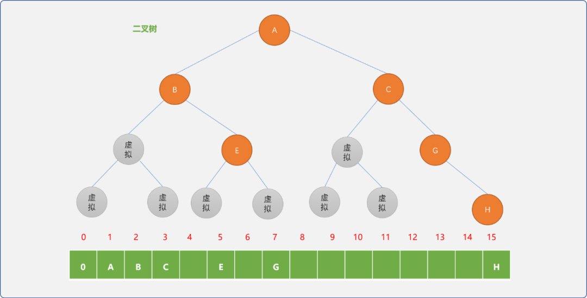
为了保证每一个结点都能被存储，如果存储有n个结点的二叉树，至少需要 22-1个存储空间。显然这是无法接受的。
为什么存储
n个结点，至少需求22-1 个存储空间，请自行思考。
故使用链表存储二叉树方是常态。一般情形下，树的结点类型至少有 3 个存储位：
- 数据位。
- 左子结点指针位。
- 右子结点指针位。
如上的结点类型设计，查找结点的子结点是方便的，但是，查找结点的父结点颇为不易。在对树的操作时，若有查找父亲结点的需求，可以在结点类型中添加一个父结点指针位。
当需求发生变化时，不应该拘泥于模式，而应该根据具体的场景，灵活设计结点的内部结构。
2.1 编码实现
如下实现时，仅用实现二叉树的链式存储，暂不涉及遍历、查找、删除等操作。可以使用递归或非递归方案遍历整棵树，受限于篇幅，在系列的后续文章中单独讲解。
- 定义结点类型：存储结点承载的值以及结点之间的关系信息。
#include <iostream>
using namespace std;
template<typename T>
struct BTNode_ {
//编号（唯一标识符）
int code;
//结点的值
T data;
//左子结点地址
BTNode_ *left;
//右子结点地址
BTNode_ *right;
//无参构造
BTNode_() {
this->left=NULL;
this->right=NULL;
}
//有参构造
BTNode_(int code,T val) {
this->code=code;
this->data=val;
this->left=NULL;
this->right=NULL;
}
//自我显示
void desc() {
cout<<"结点："<<this->code<<"_"<<this->data<<endl;
}
};
- 定义树类型：提供树的常规操作。
template<typename T>
class Tree_ {
private:
//树的根结点
BTNode_<T> *root;
//流水编号，从 1 开始（从 0 开始也可以）
int idx=1;
//尺寸
int size=0;
public:
//初始化根结点
Tree_(T val) {
//创建根结点
this->root=new BTNode_<T>(this->idx++,val);
//大小增加
this->size++;
}
//返回根结点
BTNode_<T> *getRoot() {
return this->root;
}
//析构函数
~Tree_() {
this->deleteAll();
}
//添加左子结点
BTNode_<T> * addLeftNode(BTNode_<T> * parent,T val) {
if (parent==NULL)
return NULL;
//创建新结点
BTNode_<T> *newNode=new BTNode_<T>(this->idx++,val);
if (newNode==NULL)
return NULL;
parent->left=newNode;
this->size++;
return newNode;
}
//添加右子结点
BTNode_<T> * addRightNode(BTNode_<T> * parent,T val) {
if (parent==NULL)
return NULL;
//创建新结点
BTNode_<T> *newNode=new BTNode_<T>(this->idx++,val);
if (newNode==NULL)
return NULL;
parent->right=newNode;
this->size++;
return newNode;
}
//删除指定子树
void destroy(BTNode_<T> * node) {
if(node!=NULL) {
deleteSubTree(node->left);
deleteSubTree(node->right);
delete node;
}
}
//删除整棵树
void deleteAll() {
destroy(this->root);
root=NULL;
}
//前序遍历
void preorder(BTNode_<T> *node) {
if (node!=NULL) {
node->desc();
preorder(node->left);
preorder(node->right);
}
}
};
测试：使用链表存储如下二叉树，并使用前序遍历检查树结构的正确性。
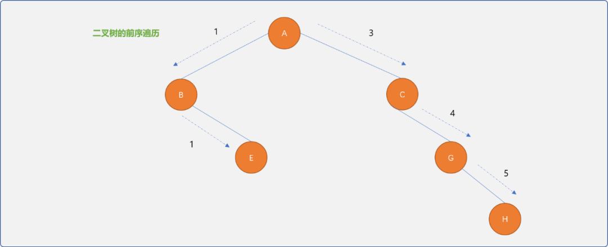
int main() {
//创建树
Tree_<char> tree('A');
//得到根结点
BTNode_<char> *root=tree.getRoot();
//添加 B 为根结点的左子结点
BTNode_<char> *bNode =tree.addLeftNode(root,'B');
//添加 C 为根结点的左子结点
BTNode_<char> *cNode =tree.addRightNode(root,'C');
//添加 E 为B 结点的右子结点
BTNode_<char> *eNode =tree.addRightNode(bNode,'E');
//添加 G 为 C 结点的右子结点
BTNode_<char> *gNode =tree.addRightNode(cNode,'G');
//添加 H 为 G 结点的右子结点
BTNode_<char> *hNode =tree.addRightNode(gNode,'H');
//前序遍历
tree.preorder(root);
return 0;
}
输出结果：
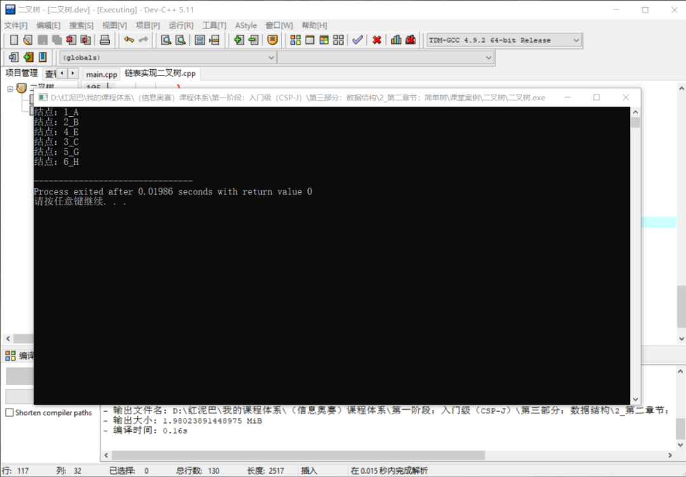
3. 总结
本文讲解了完全二叉树的特性，以及使用此特性实现完全二叉树的顺序存储。
对于非完全二叉树，并不适合顺序存储，使用链式存储更方便。
本文着重于如何存储，并提供了相应的测试代码。代码仅是服务本文的需求，实际应用时，可根据需求进行修改。